感謝您對「自由軟體鑄造場」的支持與愛護，十多年來「自由軟體鑄造場」受中央研究院支持，並在資訊科學研究所以及資訊科技創新研究中心執行，現已完成階段性的任務。 原網站預計持續維運至 2021年底，網站內容基本上不會再更動。本網站由 Denny Huang 備份封存。
也紀念我們永遠的朋友 李士傑先生（Shih-Chieh Ilya Li）。
也紀念我們永遠的朋友 李士傑先生（Shih-Chieh Ilya Li）。
開放源碼的網路弱點掃描工具──Nikto
Created at Saturday, 17 September 2011 11:50 Last Updated on Tuesday, 20 September 2011 16:23
Nikto 是一款開放源碼的 Web 掃描工具，可進行全面的 Web 伺服器多個項目測試，包括 3500 個潛在危險的文件 /CGI 檢測，搜集了超過 900 個有問題的伺服器版本以及 250 個特定的問題。掃描項目和外掛經常更新，且本程式亦支援自動更新。本專案的訴求並非設計出一款隱蔽工具，而是盡可能在短時間內測試 Web 伺服器的安全問題。 本專案使用 Perl 程式語言撰寫，並提供方便擴充的介面，於 Windows/Linux/BSD 下皆可執行。
* 官方網站：https://www.cirt.net/nikto2
* 軟體授權：GNU General Public License v2（註1）
安裝說明
1. Ubuntu/Debian (Linux)
由於常見的 Linux distribution 都會預先安裝 Perl 程式語言，所以在使用上僅需安裝 Nikto。在命令列模式輸入下列指令即可安裝完成。
# sudo apt-get install nikto 安裝完成後，可以在命令列模式下輸入 nikto 以檢查是否安裝成功。
# nikto 2. Windows
Perl 並不是 Windows 內建的程式語言，需要自行安裝。Perl 的官方網站（註2）提供 Windows 平台的使用者 Strawberry Perl 及 ActiveState Perl 兩種選擇。
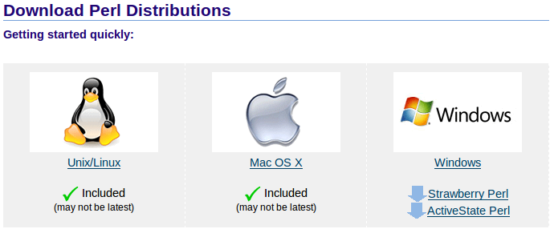
▲ 圖1
在本分享中，筆者安裝的是 Strawberry Perl。可以在其官方網站上下載，如圖：
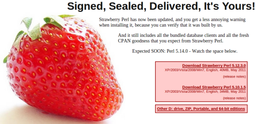
▲ 圖2
下載完成後開始安裝，如圖：
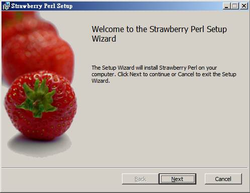
▲ 圖3
只要照著安裝步驟即可順利安裝完成。預設會將 Perl 安裝在 C:\strawberry 目錄下，並且將 Perl 環境設定完成，如 PATH 等環境變數，方便使用者可以馬上使用。
接下來只需在 Nikto 官方網站上下載最新版本（目前是 2.1.4 版），並將檔案解壓縮至系統中即可，例如筆者將 Nikto 解壓縮至 C:\nikto-2.1.4。
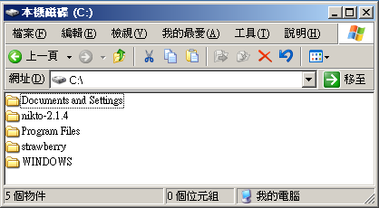
▲ 圖4
此時要記得修改 Nikto 安裝目錄下的 nikto.conf 設定檔，否則 Nikto 不會正常運作。
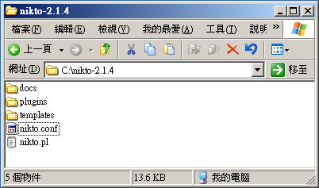
▲ 圖5
由於 nikto.conf 使用 UNIX 檔案格式，所以請使用 UltraEdit 或其它可正常顯示的編輯器開啟，否則會出現類似亂序的排版情形。若沒有安裝其它編輯器，預設的 Windows 環境中可以使用 WordPad 來編輯。
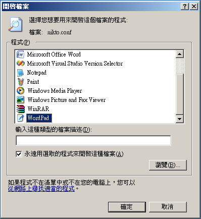
▲ 圖6
用 WordPad 開啟後，在 nikto.conf 的最後幾行內容中，可以發現 EXECDIR 的設定，如圖7。
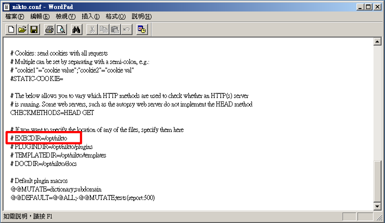
▲ 圖7
請把該行改成 "EXECDIR=C:\nikto-2.1.4"。儲存後離開。
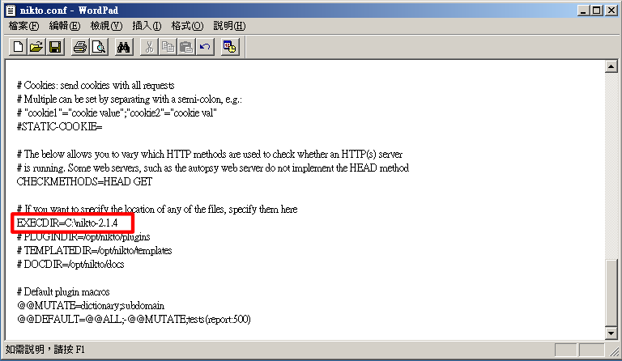
▲ 圖8
安裝完成後，可以到命令列模式下，如圖9。
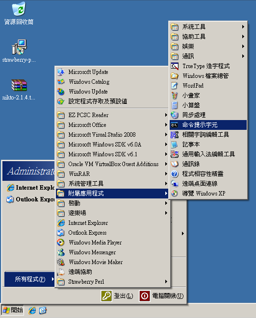
▲ 圖9
進入命令列模式後，切換至 Nikto 解壓縮的路徑，例如本例是在 C:\nikto-2.1.4。
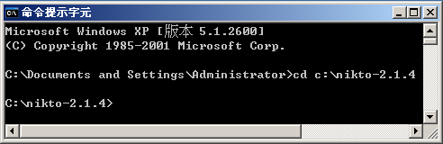
▲ 圖10
輸入下列指令，檢查是否已經成功安裝。
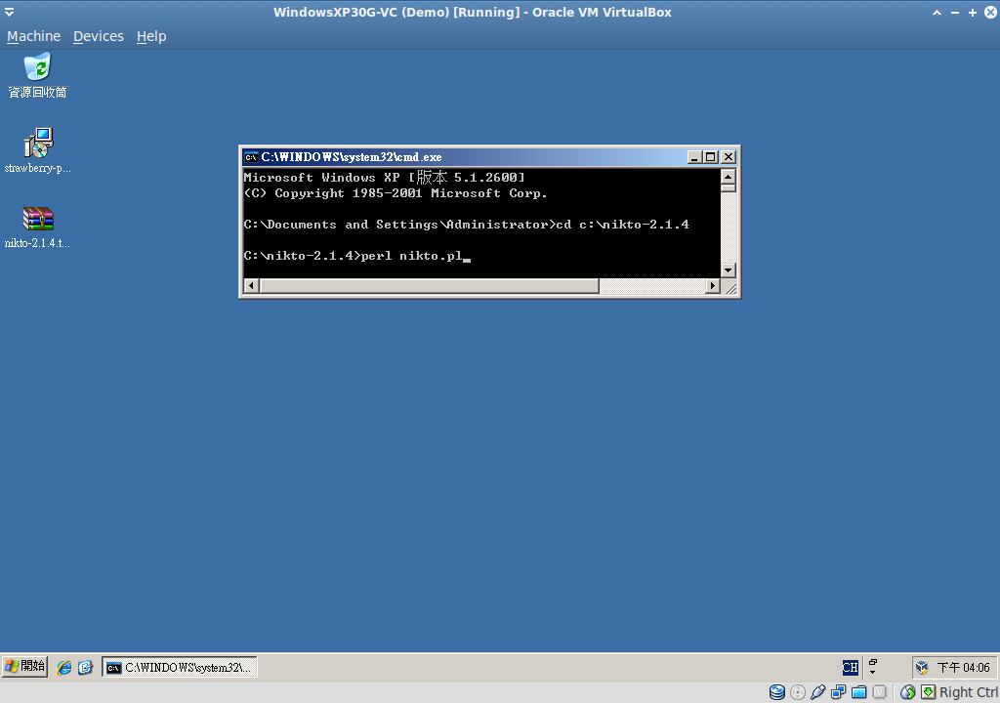
▲ 圖11
常用指令
1. 指定掃描的主機預設會掃描 Port 80。
# perl nikto.pl -h 192.168.0.1
當然也可以指定，例如 Port 8080。
# perl nikto.pl -h 192.168.0.1 -p 8080
亦可單次掃描多個端口。
# perl nikto.pl -h 192.168.0.1 -p 80,443,8080
2. 當本機使用代理伺服器時
若本機的環境是使用代理伺服器 (proxy)，則必須指定伺服器的位址。例如代理伺服器為 https://192.168.0.254:3128/。
# perl nikto.pl -h 192.168.0.1 -useproxy https://192.168.0.254:3128/
3. 使用 IDS 的躲避技術
Nikto 可以使用 IDS 的躲避技術來進行更高階的偵測行動，目前支援以下類型：
1. 隨機 URL 編碼。
2. 自訂選擇路徑（如 /../）。
3. 假的網頁請求結束。
4. 過長的 URL 請求。
5. 參數隱藏技術。
6. 使用 TAB 作為請求的分隔符號。
7. 大小寫敏感偵測。
8. 使用 Windows 預設的分隔符號 (\)。
9. 會話 (session) 重組。
因此，如果想要用到「3. 假的網頁請求結束」，則：
# perl nikto.pl -h 192.168.0.1 -evasion 3
4. 報告輸出格式
Nikto 內建多款報告的輸出格式，支援 HTML、XML、CVS，甚至可以直接產生匯給 metasploit 的格式。如果想要匯出 HTML 格式，則：
# perl nikto.pl -h 192.168.0.1 -Format html -o output.html
其實 Nikto 支援自動判斷副檔名來選擇適當的格式，例如輸出檔名為 output.html 時，則 Format 會採用 HTML；若輸出檔名為 output.xml 時，則 Format 會採用 XML。因此前述指令可以用下列指令取代：
# perl nikto.pl -h 192.168.0.1 -o output.html
5. 掃描模組的更新
Nikto 支援掃描模組的更新，方便使用者定期同步更新至最新的模組。更新的方式，只要執行下列指令即可：
# perl nikto.pl -update
結論
Nikto 除了本篇介紹的幾種方式外，還支援許多特性，有興趣的讀者不妨到 Nikto 的官方網站上搜尋。雖然 Nikto 的功能並不如許多商業軟體強大，但已足以應付常見的問題，再加上 Nikto 小巧可攜帶的特色，其實是個方便隨時隨地使用的小工具。
補充
如果在 Windows 下執行 Nikto 發生下圖的錯誤訊息，請檢查是否已正確修改 nikto.conf 中的 EXECDIR 路徑，並確認該路徑是 nikto 解壓縮的目錄。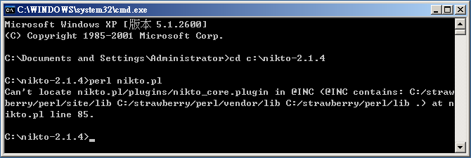
▲ 圖12
註解
1. 授權條款英文全文：https://www.gnu.org/licenses/old-licenses/gpl-2.0.html
2. Perl 官方網址：https://www.perl.org/get.html
3. Strawberry Perl：https://strawberryperl.com/
Special


Open Source Software Foundry‧ Best Viewed with IE7.0 or Firefox2.0 above, 1024x768 Resolution. E-Mail：contact@openfoundry.org
Address：No.128, Sec.2, Academia Rd., Institute of Information Science, Academia Sinica, Nangang District, Taipei City 11529, Taiwan (R.O.C).
Privacy Policy. Terms-of-use
Address：No.128, Sec.2, Academia Rd., Institute of Information Science, Academia Sinica, Nangang District, Taipei City 11529, Taiwan (R.O.C).
Privacy Policy. Terms-of-use